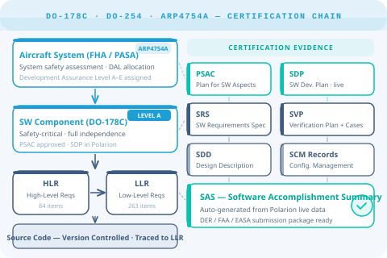

Full traceability from system-level requirements to airworthiness certification evidence — supporting DO-178C, DO-254, and ARP4754A for commercial and defense programmes.

Aerospace and defense programmes operate under the most rigorous certification regimes in engineering. DO-178C requires full traceability from high-level requirements through low-level requirements to source code and test coverage — and this must be maintained across a product life that can span 30+ years.
At the same time, defense programmes demand controlled, auditable modification processes across complex contractor ecosystems. A single undocumented change can invalidate qualification status.
DO-178C requires HLR-to-LLR-to-source-code-to-test-coverage links. Manual maintenance across thousands of items is error-prone and unsustainable.
Exact configurations must be reproducible for re-qualification, modification approval, and FAA/EASA regulatory correspondence across product lifetimes of decades.
Software Configuration Management under DO-178C requires every problem report, change request, and fix to be tracked with impact analysis — across concurrent baselines.
Preparing the Software Accomplishment Summary and Plan for Software Aspects of Certification from disconnected artefacts adds months to certification programmes.
Polarion manages the complete DO-178C artefact set — from PSAC and SDP through HLR/LLR, SCM records, and SAS — in a single governed repository.
Separate work item types for High-Level Requirements, Low-Level Requirements, and Source Code stubs with enforced bidirectional traceability links at each level. Coverage analysis is always live.
Workflows configured per Software Level (A through D) enforce the activities and independence requirements mandated by DO-178C. Level A items cannot bypass review gates.
Immutable collection baselines capture exact product state at every milestone. Any baseline can be reproduced, compared, and submitted to the DER or certification authority years after the fact.
Structured Problem Report workflow with impact analysis on all affected HLRs, LLRs, and tests. Every change is traceable to its originating PR, approval authority, and regression test record.
System-level safety assessment and development assurance level allocation is managed in the same tool as software requirements — keeping Functional Hazard Assessment links live throughout development.
Generate Software Accomplishment Summary (SAS) and certification data packages directly from live Polarion data. Evidence is always current — not assembled under schedule pressure.
Whether you're pursuing initial DO-178C certification or managing a mature airborne software baseline, we know how Polarion needs to be configured to satisfy your DER and certification authority.